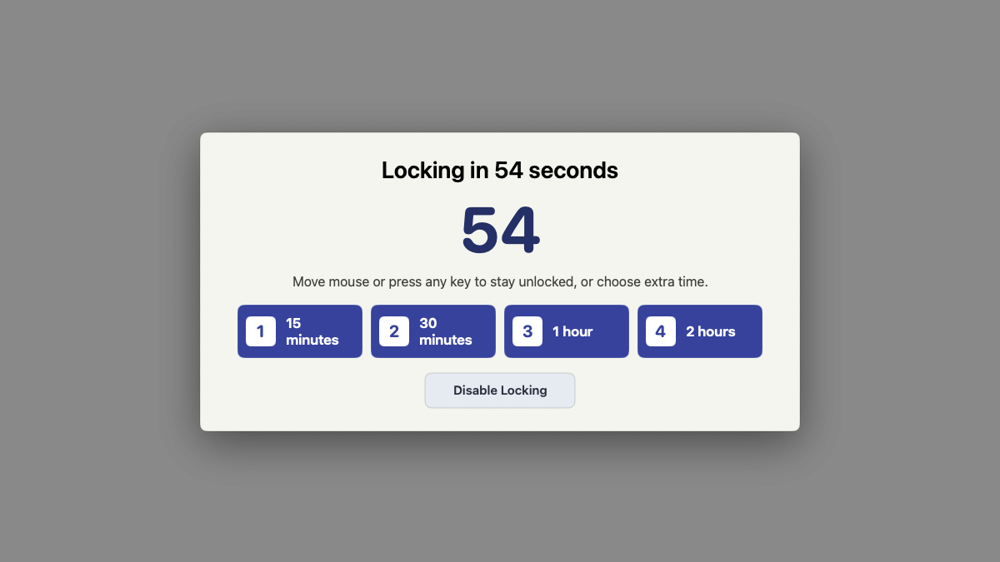
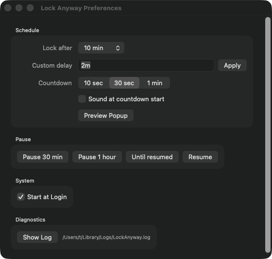
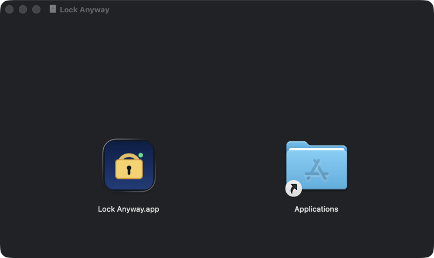

A second line of defense for your Mac
Apps can keep your Mac awake.
Not unlocked.
Lock Anyway watches real keyboard and mouse inactivity. When you walk away, it warns you—then locks your Mac even if video, remote access, or another app is keeping the display awake.
- Free
- macOS 13+
- Apple silicon
- Apple notarized

The gap Lock Anyway closes
Keep awake
≠ stay unlocked.
A video, meeting, remote session, download, or misbehaving app can keep your Mac awake longer than you expect.
Lock Anyway ignores the display state and asks one simple question: has anyone touched the local keyboard or mouse? If not, your Mac locks on your schedule.
How it works
Set it once.
Walk away safely.
Lock Anyway runs quietly in the menu bar. It does not keep your Mac awake, inspect other apps, or record what you type.
-
01
Watch real inactivity
It measures only the time since real keyboard or mouse input.
-
02
Give you a warning
A clear countdown lets you cancel, add time, or pause locking.
-
03
Lock the native way
When the countdown ends, macOS opens its normal Lock Screen.

Your timing, your call
Strict when it matters. Easy when it doesn’t.
-
01
Choose the idle limit
Pick a preset or enter the exact delay you want.
-
02
Snooze from the countdown
Add 15 minutes, 30 minutes, one hour, or two.
-
03
Pause without digging
Pause briefly or until you decide to resume.
Install in under a minute
Download. Drag. Done.
- 1
Download and open LockAnyway.dmg.
- 2
Drag Lock Anyway into Applications.
- 3
Open it and follow the one-time permission prompt, if shown.
Signed with Developer ID and notarized by Apple. No Terminal required.

Private by construction
Nothing leaves your Mac.
There is no account, analytics, advertising, cloud service, or network connection. Lock Anyway reads an idle-time counter from macOS—not your keystrokes—and stores only your preferences and local diagnostic logs.
Read the privacy policy →Questions, answered
The useful details.
Why not just use the built-in Lock Screen settings?+
If macOS already locks exactly when you expect, you do not need Lock Anyway. It is a separate backstop for cases where media, remote access, or another process keeps the display awake and delays the normal flow.
Does it read what I type?+
No. It reads the macOS idle-time counter—the number of seconds since keyboard or mouse activity. It does not capture keys, clicks, app names, documents, or screen contents.
Why might macOS ask for Accessibility permission?+
On Macs where the legacy lock command is unavailable, Lock Anyway presses the native Control–Command–Q Lock Screen shortcut. Accessibility permission allows that single action; the app does not inspect other applications.
Will downloads or remote sessions keep running?+
Lock Anyway locks the local user session without quitting applications. Whether the Mac stays awake afterward still depends on macOS and whatever process is keeping it awake.
Is it open source?+
Yes. Lock Anyway is free software under the MIT License. You can inspect the source, build it yourself, or report an issue on GitHub.
One small utility. One important promise.